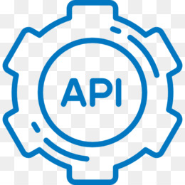
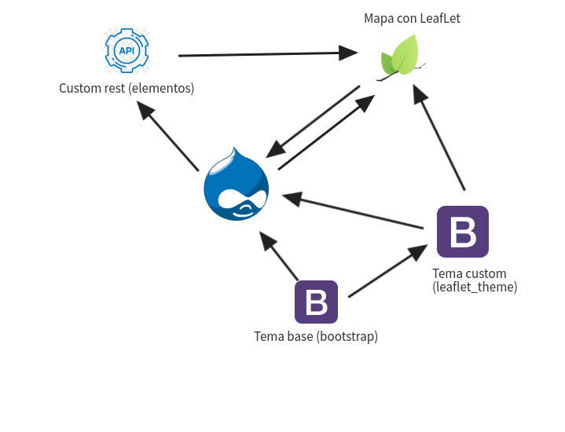

LEAFLET en tempos de REST
CHRISTIAN LÓPEZ RODRÍGUEZ
¿Quén son?
Enxeñeiro informático
Drupal Back&Front developer en CoderyOS
*JS developer
Co-fundador de galiciacorre
@christianlrcalo - clopezrodriguez95@gmail.com
¿Que vamos ver?
Teño un Rest, ¿que fago con el?
OpenLayers
Leaflet
Mapa básico (modulos)
Mapa personalizado
Resumen/recomendacións
¿Para que me serve un REST?
Acceso, descarga e almacenamento
Web scrapping
Interacción coa aplicación dona
"Darlle unha volta". Segunda vida
"Darlle unha volta". Segunda vida
Deixar un lado o convencional (csv, pdf, etc...)
Énfase no visual e intuitivo
Apoiarse na interacción co sistema visual
Gráficas (barras, queixos, dispersión)
Usar a xeolocalización en mapas/gráficos xeográficos
OpenLayers
OpenLayers
Librería basada en JS para a xeración de mapas
Grandes diferencias entre versións
Gran número de pasos e configuración para xerar un mapa
Problemas de rendemento con gran cantidade de información
Leaflet
Leaflet
Librería basada en JS para a xeración de mapas
Simple, directo e rápido
Gran cantidade de extensións dispoñibles
Fácil combinación con HTML e CSS
¿Vamos a darlle non?

NON!, pouco a pouco!!
Leaflet - Modulos D8
Leaflet - Modulos D8
1. Habilitar módulos
2. Crear tipo de contido con campo un Geofield
3. Crear vista de tipo leaflet
4. Xa temos mapa!
¡VAMOH A ELLO!
Leaflet - Modulos D8 limitacións
Non podemos personalizar a visualización
Non podemos interactuar co mapa
Só podemos mostrar o que nos proporciona Drupal
Limitacións no rendemento con grandes puntos
Se ocorre algo non sabemos que pasa
Leaflet - Autoxestionado
Librería Leaflet (CDN ou local)
Rest peronalizado
Coñecemento medio en JS
Coñecemento básico en HTML
Coñecemento básico en CSS
MOITA PACIENCIA
Leaflet - Autoxestionado
1. Crear Rest personalizado (formato GeoJSON)
2. Construír mapa cos datos do Rest
3. Engadir interactividade básica (PopUps)
4. Maior interactividade, rendemento, etc...
¡VAMOH A ELLO!
Leaflet - Custom Rest
1. Habilitar módulo Rest (integrado en Drupal)
2. Habilitar módulo Restui
3. Habilitar módulo Basic Auth (integrado en Drupal)
4. Habilitar módulo Serialization (integrado en Drupal)
5. Crear o recurso Rest personalizado (custom module)
Leaflet - Creación do mapa
1. Crear un subtema en Drupal
2. Engadir as librearías de Leaflet
3. Definir o lugar onde mostrar o mapa
4. Crear o mapa
5. Integrar pezas que faltan/revisar erros
6. Engadir interactividade no mapa
Esquema xeral
Casos reais

Galiciacorre
Tips & Tricks
¿Módulo ou autoxestionado?, Depende da finalidade
Ladrillo a ladrillo, non a parede enteria
++ Rendemento -- Información/interactividade
Usa/implementa só o que necesites
Intentar procesar todo no servidor. O navegador só debe mostrar os datos